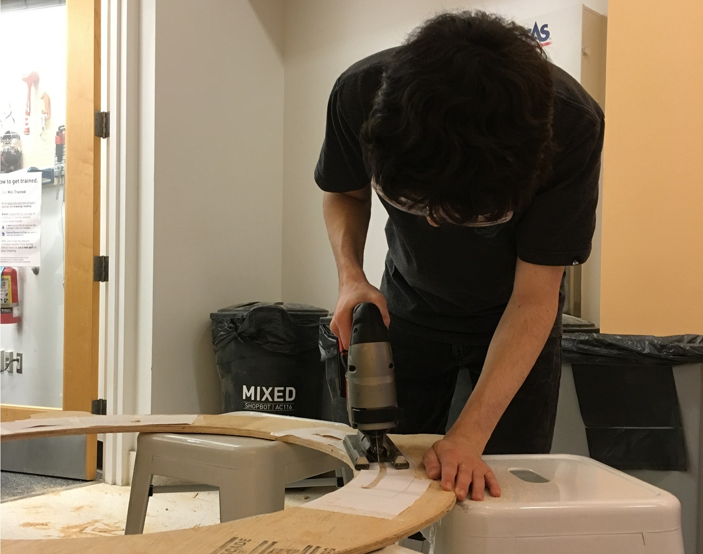
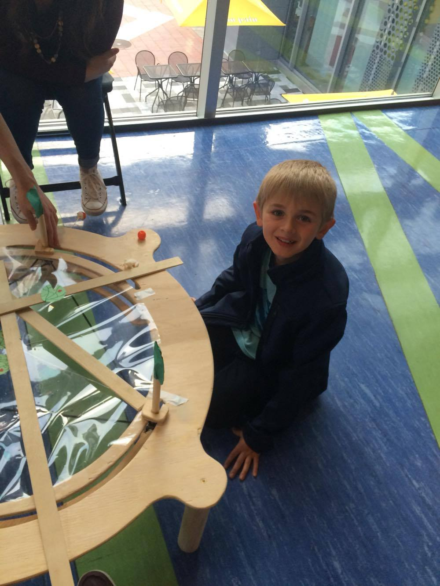

Euler's Table Exhibit
I worked with two Babson students and another Olin student on the final project for Designing Resources for Empowerment and Making (DREAM), in which we decided to make a math-based exhibition for Boston's Children Museum. We then designed, built and exhibited what we called Euler's Table.
Original Idea
We thought long and hard about what mathematical concept we wanted to show off. The difficulty was to find an idea that could be translated into a physical contraption. It was very easy to come up with concepts that could be demonstrated with software, but we turned them down as we were afraid that the computer would serve as a blackbox, leading children to dismiss the math as "magic". However, we also did not want a trivial concept that would make kids shrug.
In the end, we settled on Euler's Line for a few reasons:
- To understand it only required knowledge of perpendicular lines.
- It lead itself relatively nicely to a mechanical system.
- While the premise is accessible, the proof isn't particularly straighforward.
Design
Designing the actual table proved to be a bit more difficult than we had anticipated. The idea was to have each center (centroid, orthocenter and circumcenter) function on a different layer of the table, but move appropriately when the user displaces the vertices of the triangle.
To make the circumcenter, we simply restricted the movement of the vertices to a circle, of which we simply marked the center of. That way, the vertices could move about while keeping the circumcenter in place.
The centroid required a trickier system. The first step was to mechanically make medians. To accomplish this, we linked the three vertices with bungee cord to make the edges of the triangle through the middle of which we poked steel wire that connected to the opposite vertex. When the bungee stretched (from the user moving a vertex), the wire would still go through the middle of the edge; and of course the opposite vertex. Doing this to every edge constructed the three medians, which intersected in one point! Well when the wires were straight...
Finally, the orthocenter was the most difficult to design for. We had an idea for a bracket system which would keep rods perpendicular to an edge while going through the opposite vertex, therefore constructing the altitude. But as the demo-day approached (demo-hour actually, we cut it pretty close), we pivoted and decided that the children could put down the rods by hand on the table. That way, they could see themselves that by correctly constructing the orthocenter, it would lie on the same line as the circumcenter and the centroid.
The downside of course was that the kids had to prove themselves the existence of the euler line example by example, rather than by continuously seeing the three points align.
Construction
The construction process was a bit rocky due to arising circumstances, but in the end the final design is fairly straightforward. We made a rough CAD that helped us get an idea for the size and shape, but we changed some of the details fairly quickly when, for example, we had a bad time trying to use a jigsaw to cut plexiglass (as the piece was too large for a laser cutter). It was an ... iterative process to say the least.

Yet we pulled through, stayed within budget and were generally resourcefull the the materials and tools we had access to. This was only ever meant to be a prototype, so as long as the children using it were safe, our criterias were met.
Exhibition
We were in contact with the Manager of School Age Learning at the Boston Children's Museum throughout the project, who gave us the opportunity to show off the Table at the museum. On that special day, we were given a corner of the museum with reasonable traffic to launch or little experiment, which consisted of trying to explain Euler's Line to children of different ages.
"No"
"Do you like this?"
"Yes!"
We got a lot out of the demo session, mainly the following points:
- Children up to 6 years old could not really appreciate the mathematics (dut to their lack of background on the subject), but had a blast moving the triangle.
- It is just as easy to underestimate children's intelligence as it is easy to overestimate their attention span.
- We found that when explaining how to construct the orthocenter, some kids may nod without actually understanding, which was reflected in their inability to reproduce what we explained.
Most of the came down to our presentation not being adapted for a specific enough age range. The story we used to rope children is had to do with a frog trying to get to a hospital. In retrospect, it did not really add much to the experience, and the 3D printed frog we had made turned out to be a distraction on its own.
Mathematics education is something I've always found interest in, and this project enabled me to explore an educational medium that I hadn't looked into before. It was also very useful as a teaming experience and as an opportunity to simply build stuff.